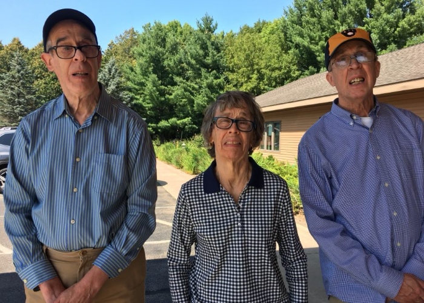
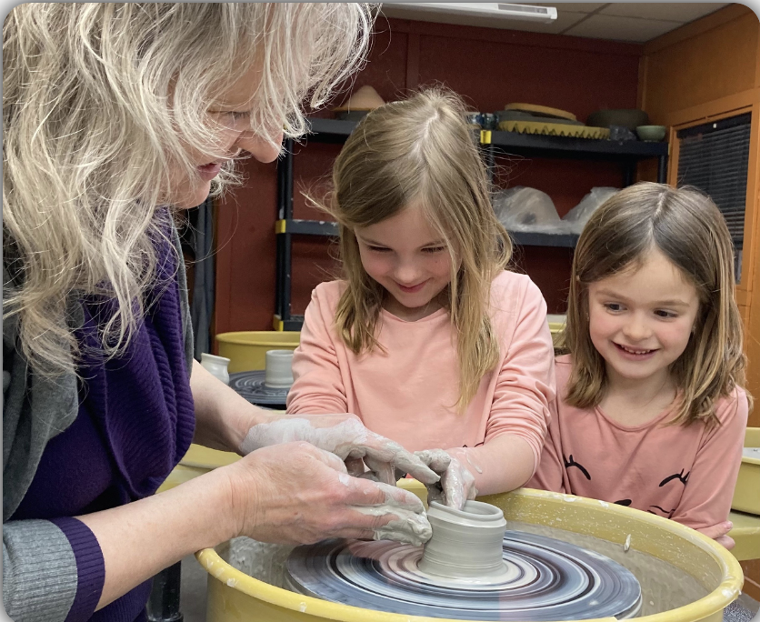
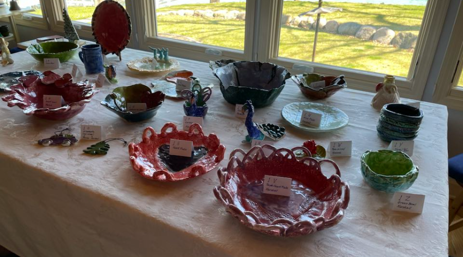
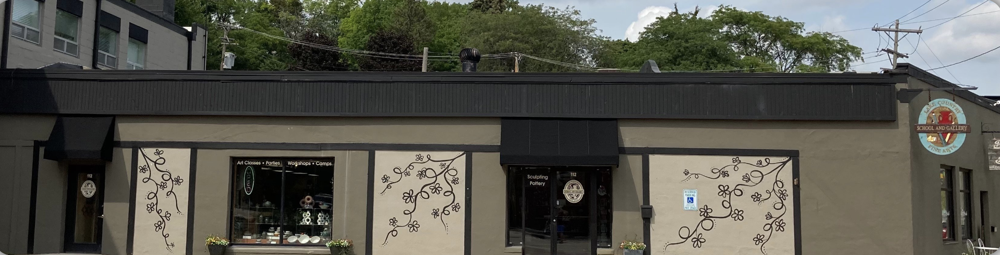

THE LAUGHLIN ARTISTS' STORY

Rosanne, Marshall, and Bernie Laughlin were born in Pittsville, WI between 1943 and 1952. Several factors (high birth weight, mother's inadequate birth canal, and forceps delivery) resulted in oxygen deprivation causing mental and physical health concerns from birth. Despite these challenges, they grew up in a loving family in their small Central WI town, where their parents instilled values of honesty, kindness, and responsibility.
In 1999, as their parents aged and needed more assistance, the family made the decision to relocate to the Milwaukee area to be closer to their daughters and receive caregiving support. They settled in Hartland and discovered Marlene Millevolte's Lake Country Fine Arts studio, where they became part of the Adaptive Clay Class.
Under Marlene's guidance and with the help of enthusiastic assistants, they discovered a passion for creating art with clay. Their creativity flourished, resulting in a variety of unique pieces, each infused with their love and joy.


Now, these one-of-a-kind creations are ready to find new homes and bring joy to others.
May their creativity bless you all, the way they (RMB) have blessed us!
Rosanne, Marshall, and Bernie Laughlin were born in Pittsville, WI between 1943 and 1952. Several factors (high birth weight, mother's inadequate birth canal, and forceps delivery) resulted in oxygen deprivation causing mental and physical health concerns from birth. Despite these challenges, they grew up in a loving family in their small Central WI town, where their parents instilled values of honesty, kindness, and responsibility.
In 1999, as their parents aged and needed more assistance, the family made the decision to relocate to the Milwaukee area to be closer to their daughters and receive caregiving support. They settled in Hartland and discovered Marlene Millevolte's Lake Country Fine Arts studio, where they became part of the Adaptive Clay Class.
Under Marlene's guidance and with the help of enthusiastic assistants, they discovered a passion for creating art with clay. Their creativity flourished, resulting in a variety of unique pieces, each infused with their love and joy.
Now, these one-of-a-kind creations are ready to find new homes and bring joy to others.
May their creativity bless you all, the way they (RMB) have blessed us!
Thank you so much for your support!
A: 112 W Capital Dr, Hartland, WI 53029
T: 262-367-4461
E: wyldmary@yahoo.com
MON - FRI: 12pm - 4pm
SAT: 11am - 1pm
SUN: 11am - 1pm